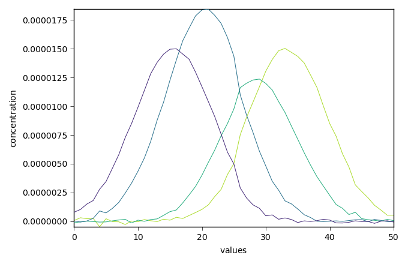
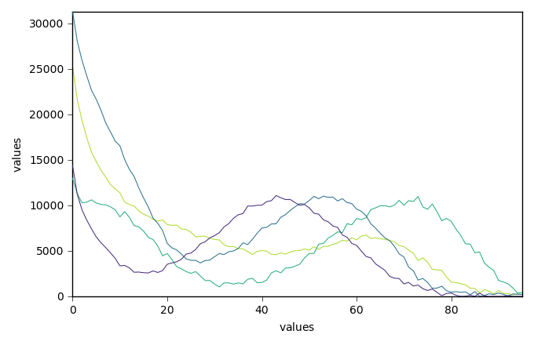

Note
Click here to download the full example code
MCR-ALS optimization example (original example from Jaumot)¶
In this example, we perform the MCR ALS optimization of a dataset corresponding to a HPLC-DAD run, from Jaumot et al. Chemolab, 76 (2005) 101-110, DOI: 10.1016/j.chemolab.2004.12.007 and Jaumot et al. Chemolab, 140 (2015) pp. 1-12, DOI: 10.1016/j.chemolab.2014.10.003 .
This dataset (and others) can be loaded from the Multivariate Curve Resolution Homepage .
For the user convenience, this dataset is present in the datadir of SpectroChemPy as ‘als2004dataset.MAT’ .
import spectrochempy as scp
Load the dataset
datasets = scp.read_matlab("matlabdata/als2004dataset.MAT")
As the .mat file contains 6 matrices, 6 NDDataset objects are returned:
print("\n NDDataset names: " + str([ds.name for ds in datasets]))
Out:
NDDataset names: ['cpure', 'MATRIX', 'isp_matrix', 'spure', 'csel_matrix', 'm1']
We are interested in the last dataset (‘m1’) that contains a single HPLS-DAD run (51x96) dataset. As usual, the 51 rows correspond to the ‘time axis’ of the HPLC run, and the 96 columns to the ‘wavelength’ axis of the UV spectra. The original dataset does not contain information as to the actual time and wavelength coordinates.
MCR-ALS needs also an initial guess for either concentration profiles or pure spectra concentration profiles. The 4th dataset ‘spure’ is a (4x96) guess of spectral profiles.
Load the experimental data as X and the guess:
Create a MCR-ALS object with the default settings The verbose option can be set True to get a summary of optimization steps
mcr = scp.MCRALS(X, guess)
The optimization has converged. We can get the concentration (C) and pure spectra profiles (St) and plot them
_ = mcr.C.T.plot()
_ = mcr.St.plot()
- 
- 
Finally, plots the reconstructed dataset (X_hat = C St) vs original dataset (X) and residuals. The fit is good and comparable with the original paper.
X_hat = mcr.plotmerit()
# scp.show() # uncomment to show plot if needed (not necessary in jupyter notebook)
Total running time of the script: ( 0 minutes 1.836 seconds)